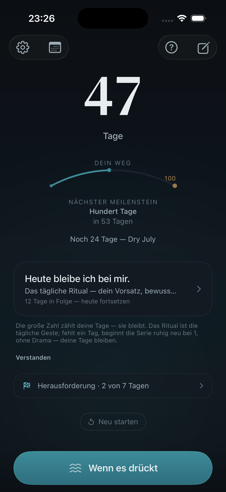
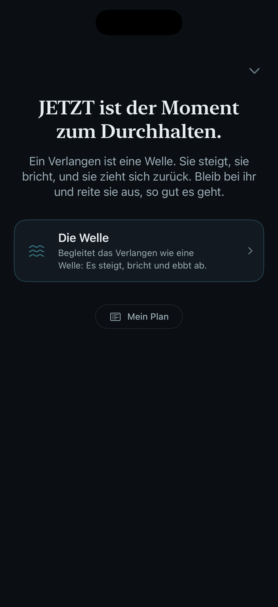
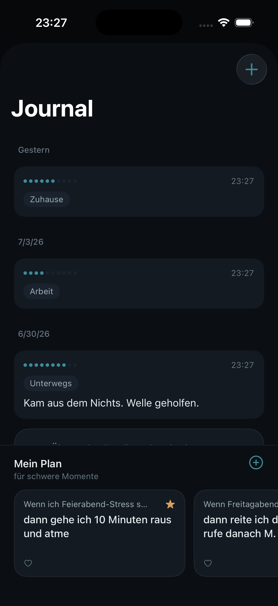

Still · Lokal · Deins
Wenn das Verlangen kommt, bist du nicht allein damit.
„Fjara" ist isländisch für die Ebbe — den Moment, in dem sich die Welle zurückzieht. Genau darum geht es: Du reitest die Welle des Verlangens, bis sie von selbst abebbt.
Fjara ist für den einen Moment gemacht, in dem der Wunsch aufsteigt — nach einem Glas, einer Zigarette oder einer anderen Gewohnheit, die du loslassen willst. Du öffnest sie, tippst einmal und reitest die Welle: eine Atemübung, die du als sanfte Vibration in der Hand spürst und die dich ruhig durch den Moment atmet, bis das Verlangen abebbt. Der Kern ist für immer gratis — kein Konto, kein Server, nichts, das dich beobachtet.
„Verlangen kommt in Wellen. Es steigt an, erreicht seinen höchsten Punkt — und ebbt wieder ab. Fjara bleibt bei dir, die ganze Welle hindurch."
So funktioniert es
Drei Schritte durch den Moment.
Keine Einrichtung, kein Nachdenken. Wenn das Verlangen kommt, brauchst du nur einen Knopf.
Fjara öffnen
Sobald der Wunsch aufsteigt — nach einem Glas, einer Zigarette oder einer anderen Gewohnheit — nimmst du dein iPhone und öffnest Fjara. Ein Tippen auf „Welle reiten", mehr ist nicht nötig.
Die Welle spüren
Fjara führt deinen Atem durch den Moment. Eine sanfte Vibration schwillt unter deiner Hand an und klingt wieder ab — ein und aus. Du musst nichts richtig machen; du folgst einfach dem, was du fühlst.
Ankommen lassen
Du atmest mit, bis die Welle sich zurückzieht und der Moment ruhiger wird. Danach kannst du einen kurzen Satz ins Tagebuch schreiben — oder das Handy einfach wieder weglegen.
Wofür Fjara steht
Vier Dinge, auf die du dich verlassen kannst.
Für den Moment gebaut
Ein Rückfall passiert meist in einer einzigen, kurzen Minute — und genau dann ist selten etwas Passendes zur Hand. Fjara ist für diese Minute da: ein Tipp auf „Welle reiten", und eine sanfte Vibration schwillt unter deiner Hand an und klingt wieder ab. Dein Atem folgt ihr von selbst. Kein Nachdenken, kein Richtig oder Falsch — nur ein Knopf, der dich hindurchträgt.
Privat by Design
Deine Daten verlassen dein iPhone nicht. Kein Konto, keine Cloud, keine Analyse-SDKs, keine Werbe-IDs. Was du Fjara anvertraust, gehört dir allein — Privatsphäre ist hier kein Feature, sondern die Grundlage von allem. Löschst du die App, ist alles weg. Vollständig.
Diskret am Handgelenk
Auch in Gesellschaft, mit einem Glas in Reichweite, kannst du die Welle reiten — still an der Apple Watch. Vibration, Restzeit und Atemphase spürst du am Handgelenk, ohne das Telefon zu zücken. Niemand am Tisch muss etwas merken. Die Apple-Watch-App gehört zu Fjara Plus.
Würde statt Scham
Kein Konfetti, keine Ranglisten, kein Streak-Druck. Fjara zeigt deinen Weg ruhig: Tage, Notizen, Meilensteine — und dein eigener Plan für schwere Momente, den du im Voraus vorbereitest. Verläuft ein Tag anders, beginnt der nächste ohne Vorwurf und bewahrt die Strecke, die du schon gegangen bist.
Ehrlichkeit zuerst
Was Fjara nicht ist.
Wir versprechen dir keine Nüchternheit. Das kann keine App — und wer es behauptet, ist nicht ehrlich mit dir.
Was Fjara ist
- Ein diskreter Begleiter, der bei dir bleibt, wenn es schwer wird.
- Ein privates Gedächtnis für deinen Weg — Tage, Notizen, Meilensteine.
- Eine haptische Welle, die dich durch Momente des Verlangens begleitet.
- Rein lokal: kein Konto, kein Server, kein Tracking.
Was Fjara nicht ist
- Kein Medizinprodukt. Fjara diagnostiziert, behandelt, lindert und heilt nicht.
- Kein Ersatz für Therapie, Entzugsbehandlung, ärztliche oder psychologische Hilfe.
- Kein Heilversprechen. Fjara macht dich nicht nüchtern — es begleitet dich.
- Keine Belehrung, keine Scham, kein Druck. Deine Entscheidungen bleiben deine.
Wichtig: Ein abrupter Entzug (etwa von Alkohol) kann medizinisch gefährlich sein — sprich vorher mit einer Ärztin oder einem Arzt. In akuten Krisen wende dich an den Notruf (144 in Österreich, 112 europaweit), an die Telefonseelsorge (142 in Österreich) oder an eine Suchtberatungsstelle in deiner Nähe.
Privatsphäre als Existenzschutz
Niemand muss wissen, dass es Fjara gibt.
Wer seinen Konsum verändert, hat gute Gründe, das für sich zu behalten. Deshalb ist Fjara so gebaut, dass es nichts über dich weiß.
- Alle Daten werden ausschließlich lokal auf deinem Gerät gespeichert.
- Kein Konto, keine Registrierung, keine E-Mail-Adresse.
- Keine eigenen Server — die App baut von sich aus keine Verbindung auf.
- Keine Analytics, kein Tracking, keine Werbe-IDs, keine Drittanbieter-SDKs.
- Löschst du die App, sind alle Fjara-Daten gelöscht. Vollständig.
Freiwillig, kein Muss
Fjara Plus — der Kern bleibt gratis.
Die Welle ist und bleibt kostenlos, so oft du sie brauchst. Plus schaltet mehr Tiefe frei — für alle, die auf ihrem Weg mehr möchten. Du wählst, was zu dir passt. Kein Countdown, kein Fake-Rabatt.
- Mehrere Vorsätze zugleich begleiten
- Längere Übungen für den Moment
- Weitere Techniken: Box-Atmung, Anker-Puls & 5-4-3-2-1
- Unbegrenztes privates Journal
- Klangwelt, direkt auf dem Gerät erzeugt
- Apple-Watch-App für den diskreten Moment
Ehrlich und übersichtlich:
- Woche — 2,99 €: zum Ausprobieren, jederzeit kündbar.
- Monat — 4,99 €: flexibel von Monat zu Monat.
- Jahr — 19,99 €: der beste Wert, rund 38 Cent pro Woche. Sieben Tage kostenlos testen.
- Lifetime — 29,99 €: ein einmaliger Kauf, kein Abo. Einmal zahlen, für immer behalten.
Nur die Welle brauchst du nie zu bezahlen — sie bleibt für immer gratis. Abos verlängern sich automatisch, bis du sie kündigst; das kannst du jederzeit in den App-Store-Einstellungen tun. Preise können je nach Region abweichen; es gilt der im App Store angezeigte Betrag.
Screenshots
Ein Blick in Fjara.
Drei Momente aus der App — so ruhig, wie sie sich anfühlen soll.


